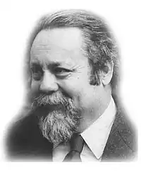
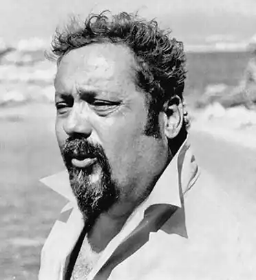
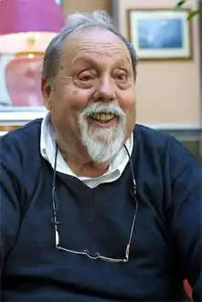

Ален Бомбар нар.27 жовтня 1924, Париж — пом.19 липня 2005, Тулон. Французький лікар, біолог, мандрівник і політик. У 1952 році як науковий досвід з виживання перетнув на одномісному гумовому човні під вітрилом Атлантичний океан від Канарських островів до Барбадосу (4400 кілометрів) за 65 днів (з 19 жовтня по 22 грудня). В дорозі харчувався спійманої рибою і планктоном. Дослід завершився успішно.
Цього людину нелегко віднести до видатних "морських вовків", оскільки у морі він виходив всього двічі, обидва рази на шлюпці без керма і без вітрил. Однак подвиг його з'явився одним з найбільш видатних досягнень людства в протиборстві з океаном.
Будучи практикуючим лікарем у приморській лікарні, Ален Бомбар був буквально приголомшений тим, що щорічно десятки і навіть сотні тисяч людей гинуть у морі! І при цьому значна частина їх не гинула від утоплення, холоду або голоду, а від страху, гинула тільки тому, що вони повірили в неминучість своєї загибелі. Їх вбивало відчай, безвольність, удавана безцільність боротися за своє життя і життя товаришів по нещастю. "Жертви легендарних аварій кораблів, що загинули передчасно, я знаю: вас убило не море, вас убив не голод, вас убила не спрага! Похитуючись на хвилях під жалібні крики чайок, ви померли від страху", — твердо заявив Бомбар, вирішивши довести на власному досвіді силу мужності і віри в себе. Щорічно до п'ятдесяти тисяч чоловік помирає в шлюпках і рятувальних поясах, і при цьому 90% з них гине у перші три дні! Цілком зрозуміло, що при корабельній аварії, з якої б причини вони не відбувалися, люди губляться, забувають про те, що людський організм здатний прожити без води десять днів, а без їжі навіть до тридцяти. Як лікар, добре знає резерви людського організму, Ален Бомбар був упевнений в тому, що безліч людей, які з тієї чи іншої причини змушені були розлучитися з комфортом корабля і рятуватися на човнах, плотах або інших підручних засобах, загинули задовго до того, як їх залишили фізичні сили: їх убило відчай. І така смерть наздоганяла не тільки випадкових у море людей — пасажирів, але і звичних до моря професійних моряків. Ця звичка була для них пов'язана з палубою корабля, надійною, хоча і гойдається на брижах. Вони звикли дивитися на море з висоти корпусу корабля. Корабель — це не просто засіб пересування по воді, це ще й психологічний фактор, що захищає людську психіку від страху перед чужою стихією. На кораблі у людини є впевненість, переконаність у тому, що він застрахований від можливих випадковостей, що всі ці випадки передбачені досвідченими конструкторами і будівельниками кораблів, що в трюмах корабля заготовлено достатню кількість всякої їжі і води на весь період плавання і навіть більше того… Недарма ще в часи вітрильного флоту говорили,що справжнє море бачать тільки китобої і мисливці за морськими котиками, так як вони нападають на китів та морських котиків у відкритому океані з невеликих шлюпок-вельботов і деколи довго блукають у тумані, віднесені раптовими штормовими вітрами від свого судна. Ці люди гинули рідко: адже вони заздалегідь були підготовлені до того, щоб якийсь час плавати по морю на шлюпці. Вони про це знали і були готові до подолання стихії на своїх вутлих і все-таки надійних вельботах. Навіть втративши з тієї чи іншої причини корабель у відкритому океані, вони долали величезні відстані і все ж приходили до землі. Правда, теж не завжди: якщо деякі гинули, то лише після багатьох днів запеклої боротьби, в ході якої вони зробили все, що могли, істо-[ щив останні сили свого організму. Всі ці люди були психологічно підготовлені до необхідності провести якийсь час на шлюпці. Це були звичайні умови їх роботи. Бажаючи змусити непідготовлених людей повірити в себе, у можливість подолати і сили стихії, і свою уявну слабкість, Ален Бомбар — не звіробій і не моряк, а звичайний лікар вирушив у плавання по Атлантичному океану у звичайній надувному човні. Він був упевнений, що в морі багато їжі і треба лише вміти добути цю їжу у вигляді планктонних тварин і рослин чи риби. Він знав, що всі рятувальні засоби на кораблях — шлюпки, катери, плоти — мають набір лісок, іноді мереж, на них є ті або інші знаряддя для промислу морської живності, нарешті, їх можна виготовити з підручних засобів. З їх допомогою можна добути їжу, так як в морських тварин укладено майже все, чого потребує наш організм. Навіть прісна вода. Втім, і морська вода, що вживається в невеликій кількості, може допомогти людині врятувати організм від зневоднення. Згадаймо, що полінезійці, які іноді неслися ураганами далеко від землі, вміли боротися за своє життя і, що, мабуть, головне, привчали свій організм до споживання морської води. Іноді тижнями і місяцями носилися човна полінезійців по бурхливому океану, і все ж остров'яни виживали, здобуваючи рибу, черепах, птахів, використовуючи соки цих тварин. У всьому цьому вони не бачили нічого особливого, так як морально були підготовлені до таких колотнеч. Але ті ж остров'яни покірно вмирали на березі при повному достатку їжі, коли їм ставало відомо, що їх хто-небудь "зачарував". Вони вірили в силу чаклунства і тому вмирали. Від страху!.. До спорядження свого гумового човна Бомбар додав лише планктонну сітку і рушницю для підводного полювання. Бомбар обрав для себе не зовсім звичайний маршрут — далекий від морських трас торгових суден. Правда, його "Єретик", як була названа ця човен, повинен був йти в теплій зоні океану, але це безлюдна зона. Північніше і південніше — маршрути комерційних судів. Попередньо, в якості підготовки до цієї подорожі, він удвох з товаришем провів два тижні в Середземному морі. Чотирнадцять днів вони обходилися тим, що давало їм море. Перший досвід тривалої подорожі на утриманні моря вдався. Звичайно, і це було важко, дуже важко! Однак його товариш, до речі сказати, досвідчений моряк, переплывший Атлантичний океан на невеликій яхті в повній самоті, але забезпечений всім необхідним в достатку, в останній момент злякався і просто зник. Двох тижнів виявилося для нього достатнім, щоб відмовитися далі випробовувати долю. Він запевняв, що вірить в ідею Бомбара, але його злякала думка про майбутню необхідності знову харчуватися сирою рибою, ковтати цілюще, але такий противний планктон і пити сік, вичавлений з тіла риби, розбавляючи його морською водою. Можливо, це був сміливий моряк, але людина не того складу, як Бомбар: у нього не було цілеспрямованості Бомбара. Бомбар підготувався до свого плавання теоретично і психічно. Як лікар, він знав, що вода набагато важливіше їжі. І він досліджував десятки видів риб, які могли зустрітися в океані. Ці дослідження показали, що від 50 до 80% ваги риби становить вода, і при цьому прісна, а також що тіло морських риб містить значно менше солі, ніж м'ясо ссавців. Ретельно перевіривши кількість розчинених у воді океану різних солей, Бомбар переконався, що якщо не вважати кухонної солі, то в кожних 800 грамах морської води міститься приблизно така ж кількість інших солей, яке є у літрі різних мінеральних вод. Ми ці води п'ємо — часто з великою користю. Під час своєї подорожі Бомбар переконався, що надзвичайно важливо не допускати зневоднення організму в перші дні і тоді зменшення водного пайка надалі не буде згубним для організму. Таким чином, свою ідею він підкріпив науковими даними. У Бомбара було багато друзів, але були і скептики-недоброзичливці, і просто ворожі йому люди. Не всі розуміли гуманність його ідеї. Газетярі шукали сенсацію, а якщо її не було, вигадували її. Фахівці дружно обурювалися: кораблебудівники — тим, що Бомбар збирається перетнути океан на човні, якій нібито не можна управляти; моряки — тим, що він не моряк, а ось піди ж ти… лікарі приходили в жах від того, що Бомбар збирається жити дарами моря і пити морську воду. Немов кидаючи виклик усім своїм скептикам, Бомбар назвав свою човен "Єретиком"… До речі, люди, добре знайомі з історією мореплавання і корабельних аварій, гаряче підтримали ідею Бомбара. Більше того, вони були впевнені в успіху експерименту. Шістдесят п'ять днів плив Ален Бомбар через океан. У перші ж дні він спростував запевнення "фахівців" в тому, що в океані немає риби. Багато книги про океанах рясніють такими виразами, як "пустельний океан", "водяна пустеля"… Бомбар довів, що це далеко не так! Просто з великих кораблів було важко помітити життя в океані. Інша справа на плоту або на шлюпці! Звідси можна спостерігати різноманітну життя моря — життя, часом незнайому, незрозумілу, повну несподіванок. Океан часто буває безлюдний протягом багатьох тижнів шляху, але він населений вночі і вдень істотами, які можуть бути корисними чи шкідливими для людини. Багатий тваринний світ океану, але мало ще ми його знаємо. Ален Бомбар довів, що людина багато чого може, якщо дуже захоче і не втратить сили волі. Він здатний вижити в найтяжчих умовах, в яких випадково може виявитися. Описавши цей нечуваний експеримент над самим собою у книзі "За бортом по своїй волі", разошедшейся багатомільйонними тиражами, Ален Бомбар, можливо, врятував десятки тисяч життів тих людей, які опинилися наодинці з ворожою стихією — і не злякалися.